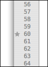
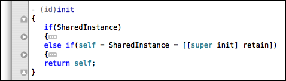
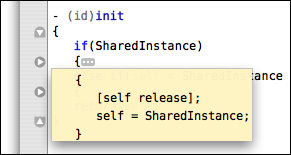
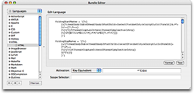
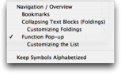
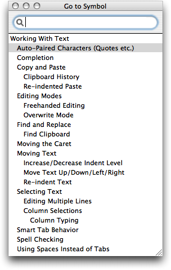

If you need to move the caret to somewhere else in your document and want a quick way to return, you can place a bookmark on the current line.
This is done either by clicking in the gutter (in the column dedicated to bookmarks) or pressing ⌘F2. The bookmark will be indicated with a star as shown below.

When you want to return you can press F2, which moves you to the next bookmark in the document. If there is more than one bookmark, you can press F2 repeatedly. ⇧F2 will move to previous bookmark.
When working in a language which has start/end markers for blocks, like { … }, do … end, <tag> … </tag> and similar, TextMate can spot these blocks and will show up/down arrows in the gutter beside the start/end marker.
When these arrows are present, it is possible to fold the block into a single line either by using the mouse and clicking on the up/down arrow, or pressing the F1 key. This will make the arrow in the gutter point to the right and indicate that the entire block was folded by placing an ellipsis marker at the end of the line. An example where the two sub-blocks of the constructor has been folded can be seen below.

With text folded, it is possible to unfold it with F1 or clicking either the arrow in the gutter or the ellipsis image. It is also possible to hover the mouse pointer on the ellipsis image to get a tool tip which shows the contents of the folded block. The latter is shown on the following picture.

A word of caution: the folding system is based on both having clear indent markers and having the fold start/stop markers use the same indent level. This means that folding based purely on indent or where the start/stop markers do not align, is currently not supported.
As mentioned the folding system uses explicitly defined start and stop markers. TextMate knows about these from the language grammar where you can setup a foldingStartMarker and foldingStopMarker regular expression.

Shown above are the HTML folding patterns, which are all relatively simple because they fold on a selected set of tag pairs, HTML comments, some Smarty tags and start/stop braces when either last on the line or used in embedded code tags like this:
<?php if(something) { // user is authenticated ?>
...
<?php } // user is authenticated ?>
To define a block that starts with { as the last non-space character on the line and stops with } as the first non-space character on the line, we can use the following patterns:
foldingStartMarker = '\{\s*$';
foldingStopMarker = '^\s*\}';
For languages that support it, the rightmost pop-up in the status bar shows the current “symbol” (often the function prototype or heading above the caret).
It is possible to click on the pop-up to get a list of all the symbols in the current document and move the caret to one of these. This is shown below.

For keyboard navigation there is also Navigation → Go to Symbol… (⇧⌘T) which opens a panel like the one shown below. The contents of this pane are the same as the pop-up from the status bar but this panel supports filtering similar to the Go to File… panel (i.e. where the filter string is treated as an abbreviation and matches are ranked according to how good a fit the abbreviation seems to be).

The panel can be left open and will automatically update as the document is edited. If you single-click an item in the list, the caret will move to the symbol clicked. Double-clicking will do the same but also closes the panel.
The symbol list works using language grammars and scope selectors. A language grammar assigns names to each element in the document and a scope selector is capable of targeting a subset of the document based on these names. Normally the parallel is HTML and CSS, e.g. we can make a theme item which sets the background to blue and then use the scope selector to pick which elements in our document we want this theme (and hence the blue background) applied to.
Bundle preferences work like theme items, except that instead of changing visual settings they (generally) change non-visual settings. One exception is the showInSymbolList. By setting this to 1 and using a scope selector which (for example) targets all function names, we are using that scope selector as a query to extract all the function names from the document, for use in the symbol list.
So to populate the symbol list we need to:
Make sure the language grammar assigns a name to what we want to show.
Create a bundle preferences item that sets showInSymbolList to 1 and uses a scope selector that matches the symbols we want to have in the symbol list.
In addition to the showInSymbolList setting there is a symbolTransformation setting which is one or more regular expression substitutions which are performed on the text extracted. The value of this setting should be: s/«regexp»/«format»/«options» optionally followed by ; and more substitutions. It is also possible to put comments in the value, these start with # and end at the next newline.
So if we want to show Markdown headings in the list, which are lines that start with one or more # marks, then we first make sure our language grammar assigns a name to these, for Markdown that can be identified with this rule, by specifying the following in the language grammar:
{ name = 'markup.heading.markdown';
match = '^#{1,9}\s*(.*)$';
},
Now we can target all headings using a scope selector of markup.heading.markdown. We can now create a bundle preferences item that is simply:
{ showInSymbolList = 1; }
This will include the leading # marks in the list, which is undesirable. We can either assign a name (via the language grammar) to the actual title, or we can perform a regular expression substitution to get rid of the leading # marks. The latter has the advantage that we can change these to indent, so that is what we do, by changing the preferences item to:
{ showInSymbolList = 1;
symbolTransformation = '
s/(?<=#)#/ /g; # change all but first # to m-space
s/^#( *)\s+(.*)/$1$2/; # strip first # and space before title
';
}